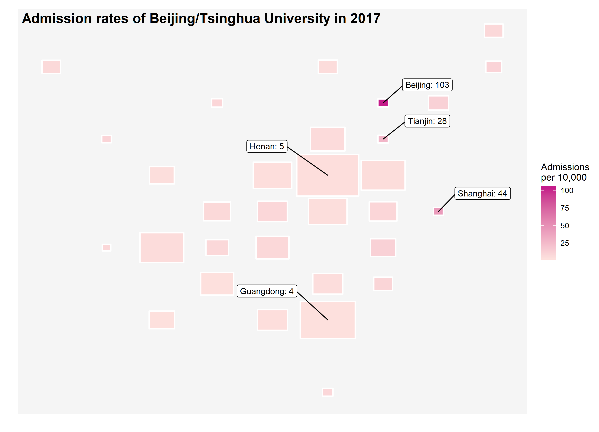

Data visualization
The geo location of provinces in China was downloade from the R pacakge geofacet by Ryan Hafen. My first intention of starting this project was inspired by a talk introducing this package. As you can easily tell from the following plots, the style was gently borrowed from the geofacet.
High admission rates in Beijing, Tianjin, and Shanghai
As you probably notice from the plot below, there are three places with very different color patterns compared to the rest of the country. The gaokao is a province-based exam so that there might be some variations. But it is uncommon to see those highly favored results happened to occur in bigger cities. It is often critized that Beijing/Tsinghua University do admit more students from these three places. Then, you might ask whether there are more students living there because these are bigger cities. The admission rates range from 0.03% to 1.03% in 2017.
ggplot(rates, aes(col, row, label = province)) +
geom_tile(aes(fill = rate*100), colour = "white",
width=0.9, height=0.9, size=1.5, linejoin = "round") +
geom_text() +
scale_fill_gradient(low = "#fde0dd", high = "#c51b8a", na.value = "#f0f0f0",
name = "Admissions\nper 10,000") +
theme_gray() +
labs(title = " Admission rates of Beijing/Tsinghua University in 2017",
x = "", y = "")+
theme(axis.text = element_blank(),
axis.ticks = element_blank(),
panel.grid.major = element_blank(),
panel.grid.minor = element_blank(),
panel.background = element_rect(fill = "#f5f5f5"),
plot.title = element_text(size=16, face="bold",
margin = margin(b = -20, t = 10)))
Unproportional admission rates
Then, I tried to add one more layer of information into the plot by making the size of the tile proportional to the number of students taking the gaokao. Guess what, you can barely find these three places no more because they all shrink to almost points. The number of students taking the gaokao is substantially lower in these three places compared to the other regions of China but with surprisingly high admission rates. Since, the size of these three plots become so small that I have to use ggrepel to label them individually.
ggplot(rates, aes(col, row)) +
geom_tile(aes(fill = rate*100, width = norm + 0.12, height = norm + 0.15),
colour = "white",
size=0.75, linejoin = "round") +
geom_label_repel(data = subset(rates, rate > 0.2), nudge_y = 0.5,
nudge_x = 0.8,
aes(label = paste0(province,": ", round(rate, 2)*100)),
size = 3.5, force = 10) +
geom_label_repel(data = subset(rates, pop > 60), nudge_y = 0.8,
nudge_x = -1.1,
aes(label = paste0(province,": ", round(rate, 2)*100)),
size = 3.5, force = 10) +
scale_fill_gradient(low = "#fde0dd", high = "#c51b8a", na.value = "#f0f0f0",
name = "Admissions\nper 10,000") +
labs(title = " Admission rates of Beijing/Tsinghua University in 2017",
x = "", y = "")+
theme(axis.text = element_blank(),
axis.ticks = element_blank(),
panel.grid.major = element_blank(),
panel.grid.minor = element_blank(),
panel.background = element_rect(fill = "#f5f5f5"),
plot.title = element_text(size=16, face="bold",
margin = margin(b = -20, t = 10)))
The same conclusion can be derived from the following two treemap plots using treemapify. I was planning to use the traditional scatter plots with different size of points but later became interested in trying this new way of showing the imbalanced proportions within groups. For example, Beijing is one of provinces in which fewest students took the exam but has the most students admitted to the top universities in China.
p1<- ggplot(rates, aes(area = pop, fill = rate*100, label = province)) +
geom_treemap() +
geom_treemap_text(colour = "white", place = "centre",
grow = TRUE) +
scale_fill_gradient(low = "#deebf7", high = "#3182bd", na.value = "#f0f0f0",
name = "Admissions\nper 10,000") +
labs(title = " Number of students taking the college entrance exam in 2017",
x = "", y = "")+
theme(axis.text = element_blank(),
axis.ticks = element_blank(),
panel.grid.major = element_blank(),
panel.grid.minor = element_blank(),
panel.background = element_rect(fill = "#f5f5f5"),
plot.title = element_text(size=16, face="bold"))
p2 <- ggplot(rates, aes(area = total, fill = rate*100, label = province)) +
geom_treemap() +
geom_treemap_text(colour = "White", place = "centre",
grow = TRUE) +
scale_fill_gradient(low = "#fde0dd", high = "#c51b8a", na.value = "#f0f0f0",
name = "Admissions\nper 10,000") +
labs(title = " Number of students admitted to Beijing/Tsinghua University in 2017",
x = "", y = "")+
theme(axis.text = element_blank(),
axis.ticks = element_blank(),
panel.grid.major = element_blank(),
panel.grid.minor = element_blank(),
panel.background = element_rect(fill = "#f5f5f5"),
plot.title = element_text(size=16, face="bold"))
cowplot::plot_grid(p1, p2, ncol = 1)